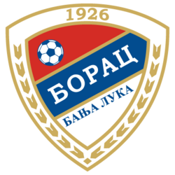
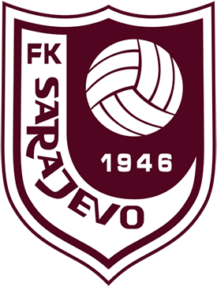
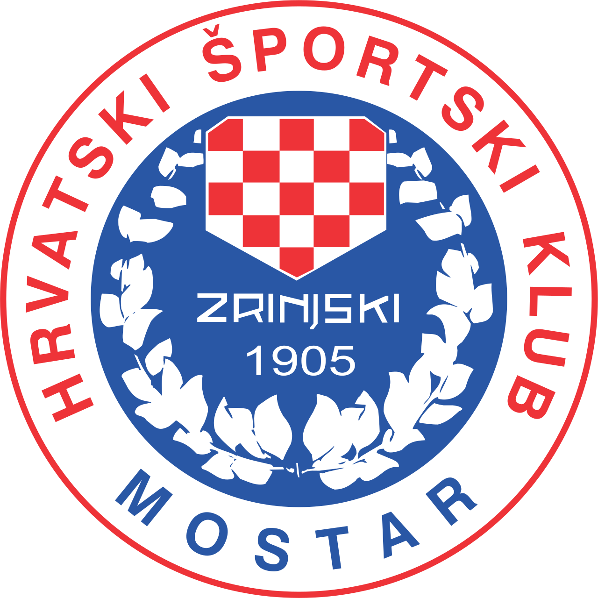
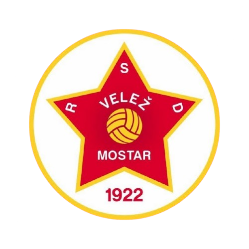
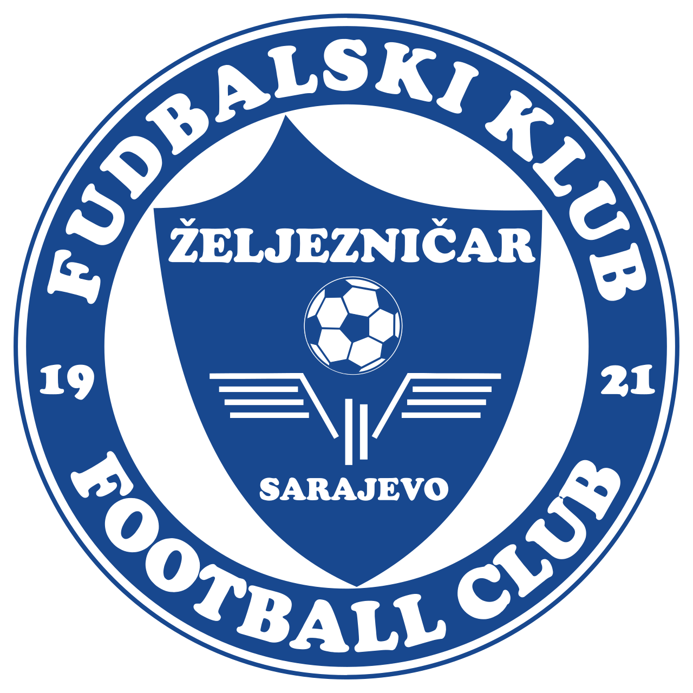
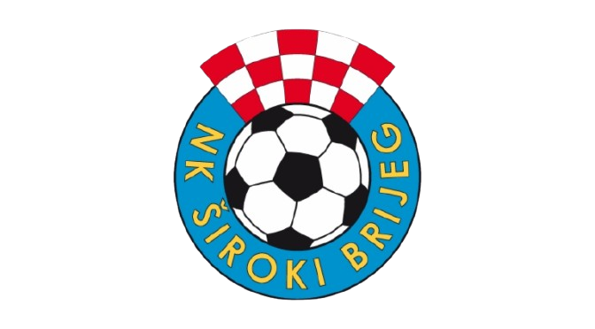
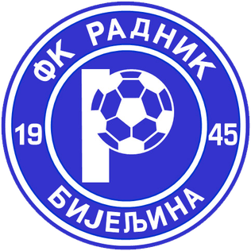
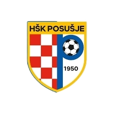
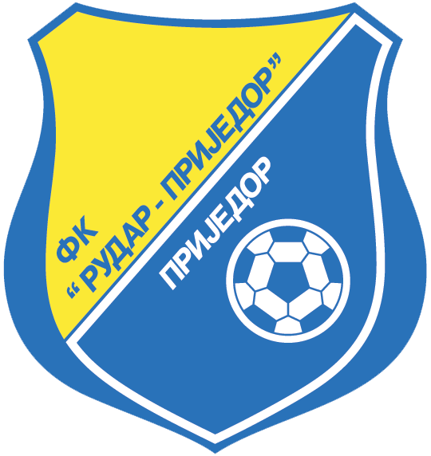
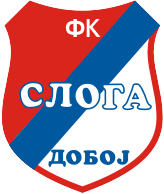

FK Borac
Lider Premijer lige BiH 2025/26. Klub iz Banja Luke osnovan 1926.
Više infoSlužbeni portal Premijer lige Bosne i Hercegovine
| Poz | Klub | P | N | I | Bod |
|---|---|---|---|---|---|
| 1 |  FK Borac | 25 | 4 | 4 | 79 |
| 2 |  FK Sarajevo | 17 | 7 | 9 | 58 |
| 3 |  HŠK Zrinjski | 20 | 6 | 7 | 66 |
| 4 |  FK Velež | 13 | 9 | 11 | 48 |
| 5 |  FK Željezničar | 10 | 11 | 12 | 41 |
| 6 |  NK Široki Brijeg | 10 | 10 | 13 | 40 |
| 7 |  NK Radnik Bijeljina | 8 | 9 | 16 | 33 |
| 8 |  HŠK Posušje | 8 | 9 | 16 | 33 |
| 9 |  FK Rudar Prijedor | 7 | 8 | 18 | 29 |
| 10 |  FK Sloga Doboj | 6 | 9 | 18 | 27 |
Lider Premijer lige BiH 2025/26. Klub iz Banja Luke osnovan 1926.
Više infoJedan od najvećih i najtrofejnijih klubova u BiH.
Više infoTradicionalni sarajevski klub sa bogatom historijom i navijačima.
Više infoMostarski klub poznat po dugoj tradiciji i navijačkoj podršci.
Više infoKlub iz Mostara sa zapaženim rezultatima u domaćem fudbalu.
Više infoKlub iz Zapadne Hercegovine sa stabilnim nastupima u ligi.
Više infoKlub iz Bijeljine koji nastupa u domaćem Premijer liga takmičenju.
Više infoKlub iz Doboja koji predstavlja sjeverni dio Bosne i Hercegovine.
Više infoKlub iz Prijedora sa dugom fudbalskom tradicijom u BiH.
Više infoKlub iz Posušja koji nastupa u najvišem rangu bh. fudbala.
Više infoCSS i dizajn
HTML i struktura
JavaScript